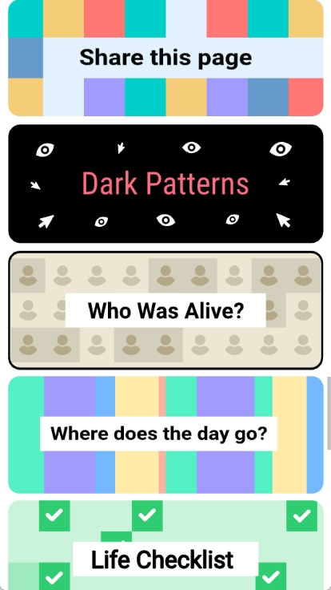

nealfun 使用指南——第一次打开就能玩的网页合集
nealfun 是一个 1.2MB 的安卓 APK，把 neal.fun 上散落的 35 个网页项目聚合成中文卡片列表。本文从零带你上手，不用任何基础。
这篇能带你从完全不懂到用起来，不需要任何基础
如果你刷到过 Infinite Craft（元素合成那个）、The Password Game（规则一条比一条过分的密码游戏），或者 Spend Bill Gates' Money（900 亿美元随便花），那你已经接触过 neal.fun 的世界了。nealfun 就是把这 35 多个独立网页项目做成了一个安卓应用——一个入口，一张卡片列表，点哪个进哪个。
它到底是干嘛的
打个比方：neal.fun 就像你手机浏览器书签栏里收藏了 35 个好玩的小网页，但书签一多就找不着了。nealfun 做的事情很简单——把这 35 个网页的入口整齐地摆在你面前，用中文写清楚"这玩意儿是干嘛的"，点一下就打开。
它不是一个游戏合集，也不是一个工具集合。它不生产任何新内容——所有游戏、模拟、可视化都是 Neal Agarwal 一个人在 neal.fun 上做的原创网页。nealfun 只是一个"入口壳"，帮中文用户在手机上更方便地找到它们，想了解更多可以去它的官网看看。
而且这个壳特别克制：1.2MB 体积（一张普通手机照片都比它大），没有登录、没有注册、没有广告弹窗、没有"请给五星好评"、没有账号体系。打开就是卡片列表，玩完关掉就走。

五分钟上手——从安装到第一次跑通
别担心，整个过程真的不到五分钟。
第一步：找到并安装
你需要拿到安装包——可以通过下载获取。安装时如果系统提示"未知来源"，在设置里允许一下就行。APK 本身很小，下载几秒就完，安装也不会请求奇怪的权限（Android 系统级的网络权限是自动授予的，应用不会额外索要定位、通讯录这类敏感权限）。
第二步：打开应用
安装完成后点图标，直接进入卡片列表。没有欢迎向导、没有登录页、没有权限弹窗——第一屏就是一张张彩色卡片，每张卡片上有项目的中文名称、简短描述和原项目的主色调。
往下滚，越滚越多。35 个项目按类别大致分成六堆：AI 合成（只有 Infinite Craft 一个但流量占大头）、决策投票（电车难题的离谱变体、密码游戏）、可视化模拟（从人类尺寸放大到宇宙、从水面滚到马里亚纳海沟）、创意设计（自己设计 iPhone、画小岛）、知识历史（互联网早期文物博物馆、猜艺术品拍卖价）、Earth Reviews 系列（给巧克力、猫、海滩打分）。更完整的分类和每个项目的详细参数可以去nealfun文档翻一下。
第三步：点一张卡片
选一张顺眼的卡片，点一下。应用会在内嵌的 WebView 里打开对应的网页项目。第一次加载会花几秒钟（毕竟是从 neal.fun 源站拉内容），之后再进同一个项目就快多了。
到这里，你已经完整走通了 nealfun 的使用流程。没有第四步了。
上手后先玩这三个功能
35 个项目挑花眼？新手推荐先碰这三个，覆盖面广、上手快、体验最能代表 neal.fun 的风格。
Infinite Craft——AI 合成的无底洞
四个基础元素（水、火、风、土），两两合成，AI 驱动。你会发现水 + 火 = 蒸汽，蒸汽 + 风 = 云，云 + 水 = 雨……一路往下合，能合出国家、能合出历史人物、能合出完全意想不到的东西。这玩意儿 2024 年全球搜索量排游戏类第三，不是没道理——你永远不知道下一次合出来的是什么。
提示：合成没有正确答案，也没有通关目标。玩 Infinite Craft 的乐趣就在于"试试看这俩能合出啥"的好奇心驱动。
Spend Bill Gates' Money——900 亿美元随便花
一个滑动条式的模拟器。屏幕上方显示你还剩多少钱，下方是一长串商品：一个汉堡、一辆特斯拉、一架私人飞机、一个小镇、一艘航母……点一下就买一个，钱数实时减少。你会发现买几辆特斯拉钱纹丝不动，但买几个航母加一个小镇，数字才开始明显往下掉。
这玩意儿被费城学区列进了经济学课堂推荐教具——因为它用最直观的方式让你体会到"900 亿"到底是多大一个数。别纠结能不能花完，试试就好。
The Deep Sea——一路滚到马里亚纳海沟
打开后就是一张可以无限往下滚的长图。从海面开始，每往下几十米，旁边就会出现对应的海洋生物和深度标注。你会看到水面的浮游生物、中层的发光鱼、深海的鮟鱇鱼，一直滚到 36,000 多英尺的马里亚纳海沟——那里的画面会告诉你，人类对深海的探索还停留在什么阶段。
这不是一个游戏，是一次沉浸式的"下潜"体验。滚完大概需要三到五分钟，停下来的时候你会对"深海到底有多深"第一次有体感。

小白的三个常见疑问
没网能玩吗？
不行。nealfun APK 本身只带卡片列表界面和项目元数据，所有游戏画面、动画、音效都是运行时从 neal.fun 网页端加载的。断网可以打开应用看到卡片，但点任何一个项目都会加载失败。这不是偷懒——1.2MB 的体积就决定了它不可能把内容打包进来。
进度会保存吗？
分两种情况。用 nealfun 合集打开的项目，进度存在应用内嵌 WebView 的浏览器存储里，清缓存就没了。如果你在 Chrome 里直接访问 neal.fun，进度存在 Chrome 的 localStorage。无论哪种方式，都没有云同步，也没有账号绑定——这是 Neal 一贯的设计选择：打开就能玩，玩完就关掉。
Infinite Craft 的官方单游戏版（Google Play 上那个，包名 fun.neal.infinite.craft）有本地存档文件，可以手动导出备份，但同样没有账号。
为什么没有"我的收藏"或"最近玩过"？
因为这些功能需要数据持久化，而持久化就意味着要记住"你是谁"。neal.fun 的设计哲学是零摩擦——不收集任何个人信息、不做行为追踪、不推送个性化广告。匿名投票数据（比如电车难题的全球投票）是聚合的，后端只知道"有一个匿名用户投了这个选项"，不知道是你。
在账号泛滥、每个 App 都要手机号验证码的今天，这种"你来过但我不留痕迹"的设计反而特别让人舒服。
一点进阶方向
玩熟之后，可以试试 Who Was Alive（输入一个年份看当时哪些历史人物在世）、Internet Artifacts（互联网早期文物博物馆）、Perfect Circle（徒手画一个圆，系统给 0–100 打分）。这几个项目能让你对 neal.fun 的六类内容有更全面的认识。
这套资料在三个仓库都能拿到——文档维护和更新同步进行，国内访问的话 Gitee 和 GitCode 镜像会更顺畅一些，GitHub 作为权威源留存。